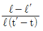
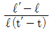
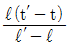
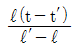

침투비파괴검사산업기사(구) (2004-09-05 기출문제)
1과목: 침투탐상시험원리
1. 후유화성 침투탐상시험시 다음 중 어느 것이 유화시간을 초과하였을 때 주로 생기는 결과인가?
- 다량의 무관련지시가 시험체에 나타난다.
- 얕은 불연속선 지시가 없어진다.
- 과잉 침투액이 세척작업후에 남는다.
- 결함속에 현상액이 침투액을 빨아 들이는 것을 막아 유화제가 굳는다.
(정답률: 알수없음)

2. 침투제 적용후 다음 유화처리 또는 세척처리를 개시할 때 까지의 시간을 무엇이라 하는가?
- 유화시간
- 침투시간
- 건조시간
- 현상시간
(정답률: 알수없음)
3. 다른 침투탐상시험과 비교하였을 때 염색침투탐상시험의 장점으로 옳은 것은?
- 작은 결함탐상에 감도가 우수하다.
- 유화제를 쓰지 않기 때문에 값이 싸다.
- 휘발성이 강하기 때문에 시험에 긴 시간을 요하지 않는다.
- 보통 가시광선하에서 시험할 수 있으며, 휴대하기가 용이하다.
(정답률: 알수없음)
4. 침투탐상시험시 유화제의 기능에 관한 설명은?
- 물로써 세척이 가능하도록 침투제를 용해한다.
- 미세한 불연속으로 침투제가 침투하는 작용을 증대시켜 준다.
- 허위 지시를 제거하여 불연속 결함 검출을 용이하게 한다.
- 현상제를 적용하기 위해 필요한 기능으로 빨아 올림작용을 도와준다.
(정답률: 알수없음)
5. 침투탐상시험시 침투액이 시험체 표면을 적시는 적심성은 어느 것과 가장 관계가 깊은가?
- 비중
- 점도
- 접촉각
- 쿨롱력
(정답률: 알수없음)
6. 눈으로 관찰될 수 있는 지시의 분별정도는 색채대비 비율값으로 표시되곤 하는데 이 비율은 어느 것을 근거로 한것인가?
- 염색이 흡수한 빛의 양에 비교하여 검사시 나타나는 자연광의 양
- 염색이 흡수한 빛의 양에 비교하여 주위 배경에서 반사된 빛의 양
- 염색이 반사한 빛의 양에 비교하여 주위 배경에서 흡수한 빛의 양
- 염색에서 반사된 빛의 양에 비교하여 주위 배경에서 반사된 빛의 양
(정답률: 알수없음)
7. 다음 중 침투탐상시험으로 검출되지 않는 결함은?
- 수축공
- 시임(seam)
- 열간 터짐
- 단조 겹침
(정답률: 알수없음)
8. 다음은 침투탐상시험의 일반적인 특성을 설명한 것이다. 옳지 못한 것은?
- 균열이나 불연속의 깊이를 정확하게 측정할 수 있다.
- 대형부품의 현장검사가 가능하다.
- 미세한 표면 불연속의 검출이 가능하다.
- 제작자가 다른 침투제를 사용할 경우 감도가 가감되는 효과를 나타낸다.
(정답률: 알수없음)
9. 침투탐상시험시 결함지시를 확대하여 관찰하기 위한 목적으로 고안된 시험방법은?
- 분말 침투법
- 에칭법
- 브레이킹 필름법
- 역 형광법
(정답률: 알수없음)
10. 다음 중 침투탐상시험으로 검사할 수 없는 시험품은?
- 알루미늄
- 플라스틱
- 유리
- 다공성 세라믹(ceramic)
(정답률: 알수없음)
11. 수세성 형광침투액 내에서의 오염된 물의 영향이 아닌 것은?
- 접촉각을 증가시킨다.
- 시험감도를 저하시킨다.
- 침투력을 저하시킨다.
- 점도를 저하시킨다.
(정답률: 알수없음)
12. 다음 중 모세관현상을 결정하는 요인에 해당되지 않는 것은?
- 응집력
- 점성
- 비중
- 표면장력
(정답률: 알수없음)
13. 수세성 침투탐상시험시 잉여 침투액을 세척하는데 일반적으로 널리 사용하는 방법은?
- 브러쉬로 잉여부를 문지른다.
- 스프레이로 세척한다.
- 기울여 붓으로 닦아낸다.
- 현상액을 섞어서 물에 담근다.
(정답률: 알수없음)
14. 다음은 자외선등에 대한 설명이다. 틀린 것은?
- 형광침투탐상시 사용하는 자외선의 파장은 3300∼3900Å이다
- 자외선을 직접 육안으로 볼수 없으므로 블랙라이트라한다.
- 자외선의 발생원인 수은등의 조사량은 2000시간 사용으로 약 70% 감소한다.
- 자외선등의 조사량은 전원 전압의 변동에는 영향이 없다.
(정답률: 알수없음)
15. 다음 침투탐상 시험결과의 신뢰성을 높여주기 위해 취한조치 중 잘못된 것은?
- 사용 중인 침투제의 성능검사를 하여 색상이 변질되었다고 인정된 때는 폐기한다.
- 사용 중인 기름베이스 유화제의 경우 성능검사를 하여 유화성능의 저하가 인정되면 소정의 농도가 되도록 조정해야 한다.
- 사용 중인 습식 및 속건식 현상제는 소정의 농도가 유지되도록 조정해 관리해야 한다.
- 사용 중인 현상제의 성능시험결과 부착상태가 균일하지 않으면 폐기한다.
(정답률: 알수없음)
16. 액체의 점성을 나타내는 SI계의 단위는?
- ㏐/m2
- W/cm3
- mm2/S
- N/m2
(정답률: 알수없음)
17. 다음 중 침투탐상검사를 시행하기에 가장 적절한 시기는?
- 불연속이 나타날 수 있는 모든 공정이 끝난 후
- 1차 가공, 1차 용접후 마지막 가공 직전
- 납품 공정과 관련없이 모든 공정이 끝난 후
- 선적하기 직전
(정답률: 알수없음)
18. 다음 중 침투제의 감도에 영향을 주는 오염물질로 볼 수 없는 것은?
- 산(酸)
- 물
- 소금
- 공기
(정답률: 알수없음)
19. 다음 결함 중 침투탐상시험으로 검출이 안되는 것은?
- 표면균열(Surface Crack)
- 적층결함(Lamination)
- 표면기공(Surface Pit)
- 피로 균열(Fatigue Crack)
(정답률: 알수없음)
20. 다음 중 최종 가공이 완료된 후 나타날 수 있는 불연속은?
- 피로 균열
- 라미네이션
- 응력부식 균열
- 열처리 균열
(정답률: 알수없음)
2과목: 침투탐상검사
21. 다공성의 세라믹 재료로써 고온에 방치되었던 제품의 검사 방법으로 효과적인 것은?
- 여과입자법(Filtered Particle Method)
- 하전입자법(Electrified Particle Method)
- 응력도료법(Brittle Coating Method)
- 유화성 색채 대비법(Emulsifiable Color Contrast Method)
(정답률: 알수없음)
22. 침투탐상시험할 때 다음 중 조작이 가장 간단한 방법은?
- 건식 현상법
- 속건식 현상법
- 습식 현상법
- 무 현상법
(정답률: 알수없음)
23. 제작 현장에서 다음의 침투제 중 용접부에 가장 많이 적용되는 방법은?
- 후유화성 형광침투제
- 용제제거성 염색침투제
- 후유화성 염색침투제
- 용제제거성 형광침투제
(정답률: 알수없음)
24. 후유화성 형광침투액에 비해 수세성 형광침투액의 장점은?
- 작은 지시들이 더 쉽게 보인다.
- 비교적 거친 표면에서도 검사가 가능하다.
- 탐상감도가 더 높다.
- 특별한 조명이 불필요하다.
(정답률: 알수없음)
25. 주조품을 검사할 때 두께차이가 큰 부분에 찢어진 형태의 선형지시가 나타났다. 검출된 지시의 예상되는 불연속 종류는?
- 기공
- 핫티어
- 수축공
- 개재물
(정답률: 알수없음)
26. 수세성 형광침투제와 건식 현상제를 사용하는 시험절차를 바르게 연결한 것은?
- 전처리-침투-세척-건조-현상-검사
- 전처리-침투-건조-세척-건조-현상-검사
- 전처리-침투-건조-세척-현상-건조-검사
- 전처리-침투-세척-현상-건조-검사
(정답률: 알수없음)
27. 다음 중 거친 면의 시험체에 적합한 침투탐상시험은?
- 용제제거성 염색침투탐상시험법
- 수세성 염색침투탐상시험법
- 후유화성 형광침투탐상시험법
- 용제제거성 형광침투탐상시험법
(정답률: 알수없음)
28. 다음 중 자외선조사 장치의 전구 수명을 단축시키는 주원인은?
- 전구 표면의 먼지
- 실내온도의 변화
- 사용전압의 변동 심화
- 침투액의 오염 상황
(정답률: 알수없음)
29. 침투탐상 시험결과 균열지시의 일반적인 모양은?
- 원형 모양
- 타원형 혹은 별 모양
- 불연속적인 점 또는 원형상의 모양
- 곧거나 톱니 모양의 연속적인 선 모양
(정답률: 알수없음)
30. 침투탐상시험에 사용되는 건식현상제의 품질을 평가하기 위한 시험은 일반적으로 어떻게 하는가?
- 비중측정으로 시험한다.
- 보통 육안으로 관찰한다.
- 용해시킨 후 점도측정으로 시험한다.
- 자외선등으로 형광물질 오염여부를 시험한다.
(정답률: 알수없음)
31. 형광침투탐상시험에서 시험품 표면을 건조하기 위한 건조처리에 쓰이는 장치로 가장 적합한 것은?
- 전열기
- 열풍식 건조기
- 적외선 건조기
- 백열등을 사용한 건조기
(정답률: 알수없음)
32. 후유화성 형광침투제 및 습식현상제를 사용하여 반거치식으로 침투탐상검사시 건조기의 위치로 적합한 곳은?
- 유화탱크 앞에
- 현상탱크 다음에
- 현상탱크 앞에
- 세척단계 다음에
(정답률: 알수없음)
33. 침투탐상에 사용되는 알루미늄 대비시험편에 대한 설명으로 틀린 것은?
- 재 사용할 수 없다.
- 현상제의 감도 시험에도 이용할 수 있다.
- 적절한 세척을 한 후 여러 번 사용할 수 있다.
- 두 종류의 침투제에 대한 감도 비교시험용으로 이용한다.
(정답률: 알수없음)
34. 수세성 침투탐상시험시 침투시간후 과잉 침투제를 제거하는 방법으로 바람직한 것은?
- 저압력 물분사
- 물과 솔질로 제거
- 증기 세척
- 물과 증기로 세척
(정답률: 알수없음)
35. 비수세성 침투제와 수세성 침투제의 큰 차이는?
- 침투제의 점성이 다르다.
- 침투제의 색채가 다르다.
- 비수세성 침투제는 수세성 침투제보다 제거성이 좋다.
- 수세성 침투제에는 유화제가 포함되어 있다.
(정답률: 알수없음)
36. 침투탐상시험시 사용되는 자외선등의 파장범위를 옳게 나타낸 것은?
- 2∼320nm
- 320∼400nm
- 400∼780nm
- 780∼1,000nm
(정답률: 알수없음)
37. 형광침투액을 사용할 때 자외선조사 등이 필요한 이유는?
- 침투액이 형광을 발하도록 한다.
- 침투의 특성인 모세관 작용을 돕는다.
- 표면의 과잉 침투액을 중화시킨다.
- 시험체의 표면장력을 감소시킨다.
(정답률: 알수없음)
38. 후유화성 형광침투탐상시 다음 중 세척단계에서 과잉 세척을 방지할 수 있는 가장 효과적인 방법은?
- 침투제가 완전히 유화되기 전 세척한다.
- 침투제가 완전히 유화된 후 세척한다.
- 과잉 침투제가 제거되자 마자 세척 작업을 중단한다.
- 110℉ 이상의 고온으로 세척한다.
(정답률: 알수없음)
39. 과잉침투제의 제거 방법에 따라 수세법, 용제제거법, 후 유화법으로 나눌 때, 용제제거법에 쓰이는 솔벤트로 과잉 침투제를 제거하는 적절한 방법은?
- 타올로 젖은 표면을 문질러 제거한 후, 세척제를 약간 적신 타올로 백그라운드를 제거한다.
- 타올로 과잉침투액을 문질러 제거한 후, 과잉의 세척제를 타올에 묻혀 제거한다.
- 분무식 세척제를 표면에 분사시켜 씻어내고 타올로 잔여물을 닦아 낸다.
- 과잉의 세척제를 묻힌 천으로 제거한다.
(정답률: 알수없음)
40. 침투제의 성능을 가늠하는 두가지의 중요한 특성치 중에서 적심성이 의미하는 뜻은?
- 접촉각으로 측정하며 접촉각이 감소할수록 적심성이 커진다.
- 점성의 기능을 말하며 표면장력이 증가할수록 적심성이 커진다.
- 접촉각으로 측정하며 표면장력이 증가할수록 적심성이 커진다.
- 표면장력으로 측정하며 접촉각이 증가할수록 적심성이 커진다.
(정답률: 알수없음)
3과목: 침투탐상관련규격
41. KS B 0816에 의한 현상시간의 설명으로 올바른 것은?
- 현상시간은 30~90분간이 바람직하다.
- 건식현상제가 적용된 경우 현상시간은 건조 직후까지로 한다.
- 습식현상제가 적용된 경우 현상시간은 적용 직후까지로 한다.
- 속건식현상제가 적용된 경우 현상시간은 건조 직후까지로 한다.
(정답률: 알수없음)
42. 서버를 직접 운용할 수 없는 중소기업이나 개인이 서버의 일부분을 임대하여 웹 사이트를 운영하도록 하는 서비스는?
- 웹 호스팅
- 로밍 서비스
- 서버 호스팅
- 웹 블루투스
(정답률: 알수없음)
43. MIL 규격에 따라 형광침투탐상시험을 할 때 허용되는 주위의 최대 밝기는?
- 10룩스
- 15룩스
- 20룩스
- 25룩스
(정답률: 알수없음)
44. 다음 도메인 이름 중에서 기관식별코드가 교육기관에 속한 사이트의 이름으로 맞는 것은?
- ddd.univ.co.kr
- db.ccc.eq.kr
- aaa.bbb.ac.kr
- ftp.univ.go.kr
(정답률: 알수없음)
45. 다음 중 컴퓨터간의 통신을 위한 소프트웨어는?
- 클리퍼
- 페이지메이커
- 이야기
- 바이로봇
(정답률: 알수없음)
46. 다음 중 파워포인트에서 제공하는 화면 전환 기능이 아닌 것은?
- 개요보기
- 슬라이드 노트
- 슬라이드 쇼
- 미리보기
(정답률: 알수없음)
47. PC의 바이어스(BIOS)에 대한 설명으로 올바른 것은?
- 바이어스는 컴퓨터의 입출력장치, 메모리 등 하드웨어를 관리하는 프로그램이다.
- 컴퓨터의 보조기억장치에 저장되어 있다.
- 바이러스를 막을 수 있다.
- 인터넷의 속도를 향상시킬 수 있다.
(정답률: 알수없음)
48. KS B 0816에 따른 현상제의 적용에 대하여 잘못 설명된 것은?
- 현상제의 적용은 잉여 침투액의 제거후 가능한 한 재빨리 실시하여야 한다.
- 건식현상제는 살포법, 정전분무법, 유동상법, 침지법등으로 시험면에 균일히 적용한다.
- 습식현상제는 형광침투탐상시험법에 한하여 적용하여야 한다.
- 수용성 현상제 사용의 시험체는 증발 또는 열풍 건조식 건조기의 사용에 의해 건조시켜야 한다.
(정답률: 알수없음)
49. KS B 0816에 규정된 침투시간의 설명 중 틀린 것은?
- 적절한 침투시간은 침투액의 성질, 적용 온도 등에 따라 좌우된다.
- 침투시간은 5 ~ 60분까지의 범위에서 변화시킬 수 있다.
- 어떤 경우라도 침투시간 중에 침투액은 건조시켜야한다.
- 적절한 침투시간은 시험체 및 검출하여야 할 흠의 종류 등에 따라 좌우된다.
(정답률: 알수없음)
50. ASTM E 165에서 Method C, Type I 방법이란 무엇을 뜻하는가?
- 후유화 형광침투탐상시험법
- 용제제거성 형광침투탐상시험법
- 수세성 염색침투탐상시험법
- 비수세성 염색침투탐상시험법
(정답률: 알수없음)
51. KS B 0816에 의한 침투탐상 시험방법 및 침투지시모양의 분류에서 기록하는 방법에 해당되지 않는 것은?
- 전자복사
- 주형· 주물
- 비디오테이프
- 필기설명
(정답률: 알수없음)
52. KS B 0816에 의거 침투탐상시험 결과 거의 동일 직선상에 두 개의 선모양 흠이 각각 3㎜와 1.5㎜가 확인되었다. 흠상호간의 거리가 3㎜로 측정되었다면 다음 중 알맞는 내용은?
- 연속된 하나의 흠지시로 간주한다.
- 독립된 두 개의 흠지시로 간주한다.
- 분산된 흠으로 4급으로 분류해야만 한다.
- 원모양 흠으로 분류해야만 한다.
(정답률: 알수없음)
53. 다음 중 ASME Sec.Ⅷ Div.1에서 규정하고 있는 침투탐상시험시 평가 대상에서 제외되는 결함 지시는?
- 1/6인치 크기의 타원형 결함지시
- 1/8인치 크기의 직선형 결함지시
- 1/10인치 크기의 타원형 결함지시
- 1/18인치 크기의 원형 결함지시
(정답률: 알수없음)
54. ASME Sec.V Art.6에 따라 수세성 침투제는 과잉 침투액을 물로 제거한다. 이 때 수압 및 수온을 설명한 것으로 맞는 것은?
- 수압은 30psi를 넘지 않아야 하며, 수온은 50℉를 넘지 않아야 한다.
- 수압은 50psi를 넘지 않아야 하며, 수온은 50℉를 넘지 않아야 한다.
- 수압은 30psi를 넘지 않아야 하며, 수온은 110℉를 넘지 않아야 한다.
- 수압은 50psi를 넘지 않아야 하며, 수온은 110℉를 넘지 않아야 한다.
(정답률: 알수없음)
55. ASTM E 165에 의해 침투탐상검사를 수행하는 경우 시험상에서의 A-3가 뜻하는 것은?
- 수세성 형광침투탐상법
- 후유화성 염색침투탐상법
- 용제제거성 형광침투탐상법
- 수세성 염색침투탐상법
(정답률: 알수없음)
56. KS B 0816에서 탐상후 최초의 관찰에 대하여 설명한 것중 틀린 것은?
- 현상제 적용후 1∼5분 사이에 하는 것이 바람직하다.
- 형광침투액을 사용한 경우 관찰전 5분간 어두운 곳에서 눈을 적응시킨다.
- 형광침투액 사용시 시험체 표면의 자외선강도가 1000μW/cm2 미만이어서는 안 된다.
- 염색 침투액을 사용한 경우 시험면의 조도가 500Lx이상인 자연광에서 관찰하는 것이 바람직하다.
(정답률: 알수없음)
57. KS B 0816에 의해 침투탐상시험을 수행하는 경우 모든 시험을 수행하고 난 후 시험보고서를 작성하고자 한다. 시험체의 정보에 대하여 기록할 사항이 아닌 것은?
- 시험체의 재질
- 시험체의 표면상태
- 시험체의 표면온도
- 시험체의 공정상의 단계
(정답률: 알수없음)
58. 침투탐상시험시 표면 상태는 검사에 중요한 요소이다. ASME code에서 표면의 전처리 방법중 불연속의 변형으로 시험결과의 감도 저하를 우려하고 있는 것은?
- 증기 세척
- 초음파 세척
- 샌드 블라스트
- 산 세척
(정답률: 알수없음)
59. KS B 0816의 흠의 분류에서 독립된 흠으로 규정되어 있지 않은 것은?
- 갈라짐
- 선모양의 흠
- 방사상 흠
- 원모양의 흠
(정답률: 알수없음)
60. 침투탐상검사의 흠 분류를 KS B 0816에 따라 한다면 다음 중 맞지 않은 것은?
- 군집된 흠
- 독립된 흠
- 연속된 흠
- 분산된 흠
(정답률: 알수없음)
4과목: 금속재료 및 용접일반
61. 스테인리스강의 미그(MIG) 용접에서 사용되는 보호가스(Shielding gas)로 가장 적합한 것은?
- N2
- CO2
- O2
- 98% Ar + 2% O2
(정답률: 알수없음)
62. 용접봉 기호 E 4316 에서 E 의 의미로 가장 적합한 것은?
- 아크 안정제
- 용접자세
- 가스 용접봉
- 피복 아크 용접봉
(정답률: 알수없음)
63. 탄소강 중에 함유되어 인장강도, 탄성한계, 경도를 상승시키며 연신율과 충격값을 감소시키는 것은?
- Sn
- Si
- Pb
- S
(정답률: 알수없음)
64. 열전대용 합금이 아닌 것은?
- 구리-콘스탄탄
- 크로멜-알루멜
- 실루민-알펙스
- 백금-백금로듐
(정답률: 알수없음)
65. 심용접의 종류 중 심부의 겹침을 모재 두께 정도로 하여 겹쳐진 폭 전체를 가압하여 결합하는 방법은?
- 맞대기 심 용접(butt seam welding)
- 매시 심 용접(mash seam welding)
- 포일 심 용접(foil seam welding)
- 다전극 심 용접(multi seam welding)
(정답률: 알수없음)
66. 아크전류가 200A, 아크전압 25V, 용접속도 15cm/min일 때 용접 단위길이 1cm당 발생하는 용접입열은 얼마인가?
- 15000 J/cm
- 20000 J/cm
- 25000 J/ cm
- 30000 J/cm
(정답률: 알수없음)
67. 후크의 법칙이 적용되는 한계는?
- 연신한도
- 탄성한도
- 항복점
- 파단점
(정답률: 알수없음)
68. 외적 구속이 없고 주변이 자유인 맞대기 용접이음의 잔류응력 분포에서 가장 큰 잔류응력을 가진 부분인 것은?
- 용접중심부
- 열영향부
- 본드(bond)부
- 모재부
(정답률: 알수없음)
69. 온도 t℃에서 길이 ℓ 인 봉을 온도 t′℃로 올릴 때 길이가 ℓ′로 팽창했다면 이 때의 열팽창 계수는?




(정답률: 알수없음)
70. 다음 원소 중 비중이 가장 큰 것은?
- V
- Sb
- Mo
- Mn
(정답률: 알수없음)
71. 금속에 대한 설명 중 틀린 것은?
- 비중 약 5이상의 금속을 중금속이라 하며 Aℓ , Ni, Ti, Cu, Mg 등이 이에 속한다.
- 금속이 갖는 특성 중 연성 및 전성이 좋다는 것은 소성변형능이 큰 것을 나타낸다.
- 금속적 성질과 비금속적 성질을 같이 나타내는 것을 아금속(metalloid)이라 한다.
- 일반적으로 융점이 높은 금속은 비중도 크다.
(정답률: 알수없음)
72. 청정효과(cleaning action)는 금속표면의 산화 피막을 자동적으로 제거하는 특성으로 다음 중 어느 용접에서 가장 많이 생기는 효과인가 ?
- 원자수소 용접
- 탄산가스 아크 용접
- 서브머지드 아크 용접
- 불활성 가스 금속 아크 용접
(정답률: 알수없음)
73. 구조용 복합 재료에서 FRM이란?
- 비정질합금
- 수소저장합금
- 형상기억합금
- 섬유강화금속
(정답률: 알수없음)
74. 표면의 균열, 홈, 핀홀(pin hole) 등 결함에 대하여만 유효한 방법으로 특히 비자성 재료의 표면검출에 효과가 있으며, 육안으로 결함의 크기를 식별할 수 있는 검사법은?
- 침투탐상법
- 자분탐상법
- 초음파탐상법
- 방사선투과법
(정답률: 알수없음)
75. 가스 용접시 팁 끝이 순간적으로 막히면 가스의 분출이 나빠지고 토치의 가스 혼합실까지 불꽃이 도달되어 토치가 빨갛게 달구어지는 현상을 무엇이라 하는가?
- 역류
- 역화
- 인화
- 점화
(정답률: 알수없음)
76. 열팽창 계수가 대단히 적고 내식성도 좋아 표준척, 시계추, 바이메탈 등에 사용되는 합금은?
- 퍼말로이(Permalloy)
- 콘스탄탄(Constantan)
- 모넬메탈(Monel metal)
- 인바(Invar)
(정답률: 알수없음)
77. 오스테나이트계 스테인리스강의 특징이 아닌 것은?
- 내식성이 우수하다.
- 강자성체이며 인성이 나쁘다.
- 가공이 쉽고 용접도 용이하다.
- 염산, 염소가스, 황산 등에 의해 입계부식이 생기기 쉽다.
(정답률: 알수없음)
78. 아크용접에서 직류 정극성으로 용접할 경우 모재의 용입에 대한 역극성과의 비교 설명으로 올바른 것은?
- 두께에 따라 다르다.
- 직류 역극성보다 얇다.
- 직류 역극성보다 깊다.
- 역극성과 정극성이 같다.
(정답률: 알수없음)
79. 전기동을 진공이나 무산화분위기에서 정련 주조한 것으로 진공관 또는 전자기기용으로 사용되는 것은?
- 전로동
- 제련동
- 무산소동
- 강인동
(정답률: 알수없음)
80. 맞대기 용접에 대한 필릿 용접이음의 비교 설명으로 틀린 것은?
- 맞대기 용접보다 현장 조립시 좋다.
- 맞대기 용접보다 용접 결함이 생기기 쉽다.
- 맞대기 용접보다 변형 및 잔류응력이 크다.
- 맞대기 용접보다 부식에 영향을 많이 받는다.
(정답률: 알수없음)